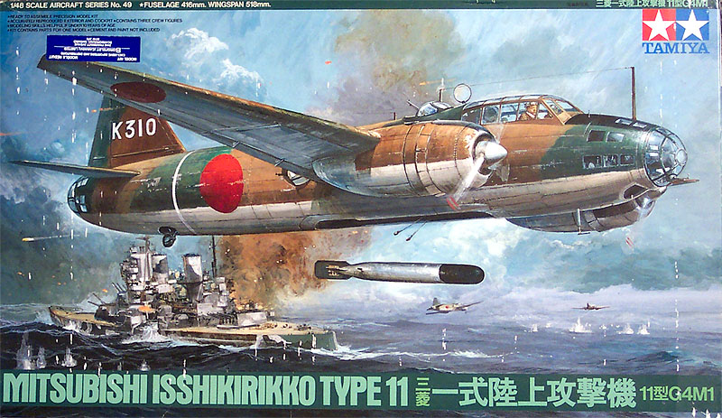
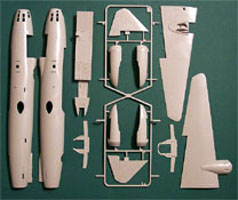
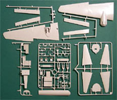
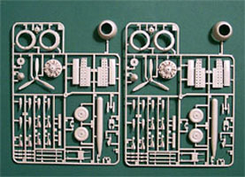
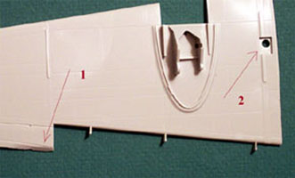
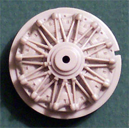
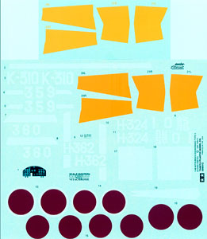

{kind=link}
{kind=link}
{kind=link}
{kind=link}
{kind=link}
{kind=link}


Tamiya 1/48 Scale Mitsubishi G4M1 �Betty�

Kit # 61049 MSRP $64.00
Images and text Copyright � 2004 by Matt Swan
Developmental History
Designed to incredibly difficult 1938 Navy spec, the G4M1 'Betty' Bomber was the Japanese Navy's premier heavy bomber in WWII. The British heavily influenced the Japanese Navy during the formative years of their naval air arm. One lesson they took to heart was the idea of supporting the carrier-based planes with land-based attackers, long-ranged multi-engined bombers. Mitsubishi wanted to create a four-engined bomber, but the Navy insisted that the new bomber be a twin. The new bomber made its first flight on October 23, 1939. Its remarkable long range and speed was achieved by depriving the aircraft of armor while providing it with huge fuel tanks in the wings. Since the tanks were not self-sealing the Betty was extremely vulnerable. Use in the Guadalcanal campaign revealed its flaws and its tendency to burst into flames when the wing tanks were punctured. This property was a delight amongst Allied fighter pilots. The Japanese crew was less enamored with this tendency. The G4M was called the Hamaki or �Flying Cigar� by its crews but Allied pilots referred to it as �The One-Shot Lighter�.
The "Betty" played for the heavy bombers the same role that the Zero played for the fighter of the Imperial Navy. Sovereign at the start of the Pacific War, it went on fighting and being produced until the bitter end, despite a growing inferiority facing the allied air opposition. The Betty made a spectacular entry in the Pacific War: as soon as the second day sinking two capital ships, the Prince of Wales and the Repulse off the Malaysian coast. In January of 1943, it added the heavy cruiser Chicago to its score during the battle of the Rennels Islands in the Solomons. The Betty was somewhat unique in that the bomb bay door was non-functional in flight. This meant the door was removed for bombing missions, and had a panel removed from it for carrying torpedoes. Only for transfer or reconnaissance missions was the door on the plane.
On February 20, 1942, while defending his carrier, the Lexington, against a bombing attack by nine G4M1s, Lieutenant (jg) Edward �Butch� O�Hare of the US Navy shot down five of the attackers. This was the first time ever that an American fighter pilot had shot down five enemy planes in a single sortie, and O�Hare won the Medal of Honor for this feat. Evading the tail cannon of his victims, he concentrated his fire on the port or starboard wing and engine. Each of his five victories either exploded, or lurched out of formation and dived for the sea in flames. Admiral Isoroku Yamamoto was flying in a G4M1 Model 12 when he was shot down and killed by P-38 Lightnings over Bougainville on April 18, 1943.
From 1943 onwards luck turned against it. It remained on the frontline only because there was no available replacement. The few progressions in armament and protection were not enough and the losses mounted. The increasing losses in the South Pacific forced the Japanese to sacrifice some of its range to protect the fuel tanks and equip the plane with fire extinguishers. Forced improvements to the model before obsolescence led to its replacement by the G4M2. The last G4M1 left the frontline in the autumn of 1944. In 1945 some survivors were employed to carry suicide devices to attack the allied ships around Okinawa. Having played such a prominent part in the opening phase of the Pacific War the G4M was to figure in the final drama of that conflict, when on August 19th, 1945 two G4M1s carried the Imperial delegation to Ie-Shima to discuss the final requirements for Japan's surrender, both painted white with green crosses. Total production of the G4M was 2,479 - a remarkably high figure for a Japanese medium or heavy bomber. The final word on the G4M Betty must be that it began its career in the Pacific with a rare blaze of glory, but in the majority of cases, aircraft of this type ended their careers in blazes of glory, with all too fatal results for the seven-man crews.
The Kit
The first thing that grabs your attention when you open this large box is the huge cigar shaped fuselage pieces. With total disregard for the rest of the trees in the box you are drawn to hold these pieces and run your fingers over their smooth length, marveling at the fine engraved panel lines and the beautiful medium gray plastic. As impressive as the exterior of this piece is the interior is equally impressive with lots of rib and other fine details molded in place. This kit is everything I have come to expect from this innovative company.
Once I got over those impressive fuselage pieces I was able to move deeper into this glorious box of polystyrene. There are eight trees of medium gray injection molded pieces protected by individual poly bags and a single large tree of clear parts. Also included are a couple of poly caps for the propeller installation. All of the gray plastic pieces display nice, crisp engraved panel lines except for a few locations on the engine cowlings. I found it just slightly odd to have two very finely raised panel lines on each engine cowling.



You can click on the above images to view larger pictures


All the pieces fit beautifully and the interior includes wing spars to assure the proper positioning of the long main wings. There is also a short spar for the tail and horizontal stabilizers. The interior areas of the wings also have heavy formers cast in place to give them a good rigid structure. There are several internal bulkheads with good detail molded into them as well. There is plenty of cockpit detail and three seated crew members included. The engine faces have some really nice detail and you can see some of that in the picture to the right. The wings have very fine trailing edges, which is good and bad. It�s good in that you get a fairly realistic trailing edge on your model but its bad because it can be easily damaged in shipping like mine did. You can click on the picture to the left and see the shipping damage at arrow #1. Arrow #2 indicates a neat feature of the wing. This small square hole is designed to accept a stud that inserts into the main wing spar to help align the wing � very neat.
Going back to the clear parts sprue we have 19 pieces with finely raised panel lines and good clarity of casting. There is an option for the top gun position it the �in use� or �stowed� position and the main cockpit can be completed open or closed. The tail cone in made with a slot for the tail cannon but nearly all of my reference material shows the last few feet of the cone removed for the cannon. Those eight trees of gray pieces include bombs, a torpedo and exhaust flame dampeners so you can model many different variants. You also have options for flaps up or down. The landing gear doors are cast in the open position so if you want to do an in-flight model you will have to perform some slight surgery. Overall we get 153 gray injection molded pieces. Add in those two poly caps for the propellers and we have 173 total pieces in the box.
Decals and Instructions

Tamiya has given us a nice, comprehensive set of instructions for this kit. They are in two sections, the first being a full sized (8 � inch by 11 inch) sheet fold out with four panels on each side. The cover panel has a brief historical background on the aircraft in four languages. The second panel begins with the standard tools and construction tips along with a color chart featuring Tamiya paint codes only. The remaining panels cover seventeen exploded view construction steps including many color call-outs and some additional text to aid with construction. The second set of instruction material is a decal placement chart and exterior paint scheme for two basic color schemes. The decals included with the kit consist of a large sheet with plenty of hinomarus and unit markings allowing you to model six different aircraft. They include yellow wing leading edge markings in both a faded yellow and a dark, almost orange yellow. Most of the decals look like they will be fine but my experience with those leading edge decals says you will be better off painting those markings. There are no service or other stencils included but there is a single large decal for the main dashboard if you want to go that way.
Conclusions
This is a very nice kit, its well engineered and manufactured with plenty of options included. The instructions are very good and the decals are adequate. There are a few accessories out there on the aftermarket for this aircraft, Cutting Edge and Eduard make a variety of paint masks for it and Moskit makes a replacement set of exhaust manifolds for it. Cutting Edge also offers a replacement set of flying control surfaces and Eduard has a fairly extensive PE interior detail package. This can be build directly from the box using the offered decals and result in a magnificent looking model but if you really want to be different I would suggest that you pick up a copy of The Hamlyn Concise Guide to Axis Aircraft of World War Two by David Mondey and take a look at some the really nice color plates of various �Bettys� shown there. Either way, if you don�t have a copy of this aircraft in your WW2 model collection then your collection is not complete.